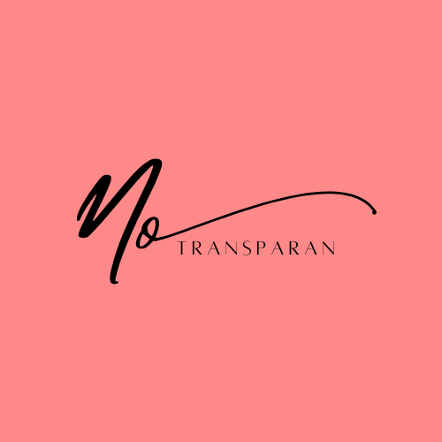

<!DOCTYPE html>
<html lang="en">

<head>
  <meta charset="utf-8" />
  <meta name="viewport" content="width=device-width, initial-scale=1" />
  <title>Home</title>
  <link href="https://cdn.jsdelivr.net/npm/bootstrap@5.2.2/dist/css/bootstrap.min.css" rel="stylesheet"
    integrity="sha384-Zenh87qX5JnK2Jl0vWa8Ck2rdkQ2Bzep5IDxbcnCeuOxjzrPF/et3URy9Bv1WTRi" crossorigin="anonymous" />
  <link rel="stylesheet" href="stylehome.css" />
</head>

</html>

<body>
  <!--Navbar-->
  <nav class="navbar navbar-expand-lg navbar-light shadow-sm fixed-top" style="background-color: white">
    <div class="container">
      <a class="navbar-brand" href="#">
        
      </a>
      <button class="navbar-toggler" type="button" data-bs-toggle="collapse" data-bs-target="#navbarNav"
        aria-controls="navbarNav" aria-expanded="false" aria-label="Toggle navigation">
        <span class="navbar-toggler-icon"></span>
      </button>
      <div class="collapse navbar-collapse" id="navbarNav">
        <ul class="navbar-nav ms-auto">
          <li class="nav-item">
            <a class="nav-link active ms-1" aria-current="page" href="TampilanHome.html">Home</a>
          </li>
          <li class="nav-item">
            <a class="nav-link active ms-1" aria-current="page" href="informasi.html">Informasi</a>
          </li>
          <li class="nav-item">
            <a class="nav-link active ms-1" aria-current="page" href="program.html">Program</a>
          </li>
          <li class="nav-item">
            <a class="nav-link active ms-1" aria-current="page" href="kontak.html">Kontak</a>
          </li>
          <li class="nav-item">
            <a class="btn ms-3 text-white" href="Donasi.html" style="background-color: #db00ff">Donasi</a>
          </li>
        </ul>
      </div>
    </div>
  </nav>

  <!--Tampilan Banner-->
  <section id="home">
    <div class="container-fluid banner">
      <div class="row h-100 ms-3 me-3">
        <h1>Jangan Lupa Berdonasi</h1>
        <p>Berapapun Nilainya Pasti Sangat Berarti</p>
        <h2>#WujudkanMimpi</h2>
      </div>
    </div>
  </section>
  <section id="donasi sekarang">
    <div class="button text-center ">
      <a href="Donasi.html"><button class="btn btn-secondary btn-lg fw-bold" style="background-color: #db00ff">Donasi
          Sekarang</button></a>

    </div>
  </section>

  <!--Tampilan Awal Informasi-->
  <section id="informasi">
    <section class="container">
      <div class="row text-left">
        <div class="col">
          <h2>Mengenai Wujudkan Mimpi</h2>
        </div>
      </div>
      <div class="d-flex">
        <div class="col-6">
          <p class="ms-0 ">Wujudkan Mimpi merupakan sistem donasi yang diciptakan untuk memudahkan
            para donatur dalam berdonasi. Sistem ini sangat membantu para donatur yang ingin berdonasi kepada phak-pihak
            yang membutuhkan dengan memperoleh informasi terlebih dahulu pada sistem. Dalam sistem, juga tersedia segala
            informasi secara rinci terkait orang-orang yang membutuhkan bantuan dana.
          </p>
          <p class="ms-0">Wujudkan Mimpi menyelenggarakan program donasi yang tertuju kepada tiga aspek, yaitu
            Pendidikan,
            Kesehatan, dan Sosial Masyarakat. Dengan adanya sistem ini, diharapkan agar dapat mendorong banyak pihak
            untuk saling peduli dan ikut serta memperbaiki mutu Pendidikan, Kesehatan, dan Sosial di Indonesia,
            khususnya bagi pihak yang membutuhkan.
          </p>
        </div>
        <div class="gambar col-lg-6 ms-4">
          
        </div>
      </div>
      </div>
      </div>
      </div>
      <div class="row text-end mb-4">
        <div class="col-12">
          <h3 class="ms-0 mt-2">Program Wujudkan Mimpi</h3>
        </div>
        <div class="row justify-content-end fs-10">
          <div class="col-6">
            <p>"Pendidikan" adalah program donasi yang dibuat dengan tujuan untuk membantu anak-anak yang putus sekolah
              karena ekonomi yang kurang memadai.</p>
            <p>"Kesehatan" adalah program kedua yang dibuat dengan tujuan untuk membantu masyarakat yang mengalami
              kesulitan biaya dalam melakukan pengobatan.
            </p>
            <p>"Sosial Masyarakat" adalah program ketiga yang dibuat dengan tujuan untuk membantu masyarakat secara
              umum baik yang mengalami
              musibah atau bencana alam.
              <a href="program.html">Selanjutnya >>></a>
            </p>
          </div>
        </div>
        <div class="gambar2 col-lg-6" data-aos="fade-right">
          
        </div>
      </div>
    </section>

    <!--Tampilan Lanjutan Informasi-->
    <section id="informasi2">
      <div class="container">
        <div class="row text-center text-white">
          <div class="col">
            <h4>Kenapa Harus Berdonasi di Wujudkan Mimpi?</h4>
          </div>
        </div>
        <div class="row">
          <div class="col-4">
            <div class="card">
              
              <div class="card-body">
                <h5 class="card-title">Mudah dan Terpercaya</h5>
                <p class="card-text ms-0">Semua galang dana yang dibuat sudah melalui proses kurasi dan verifikasi
                  secara
                  akurat oleh tim kami</p>
              </div>
            </div>
          </div>
          <div class="col-4">
            <div class="card">
              
              <div class="card-body">
                <h5 class="card-title">Cepat</h5>
                <p class="card-text ms-0">Proses donasi yang kamu lakukan hanya dalam hitungan menit dengan berbagai
                  metode
                  pembayaran</p>
              </div>
            </div>
          </div>
          <div class="col-4">
            <div class="card">
              
              <div class="card-body">
                <h5 class="card-title">Transparan</h5>
                <p class="card-text ms-0">Pencairan dan penggunaan donasi yang sudah diterima penggalang dana dapat
                  dilihat
                  di update aktivitas</p>
              </div>
            </div>
          </div>
        </div>
      </div>
    </section>

    <footer>
      
      <p class="text-center">Copyright by <b>Wujudkan Mimpi</b></p>
    </footer>
</body>